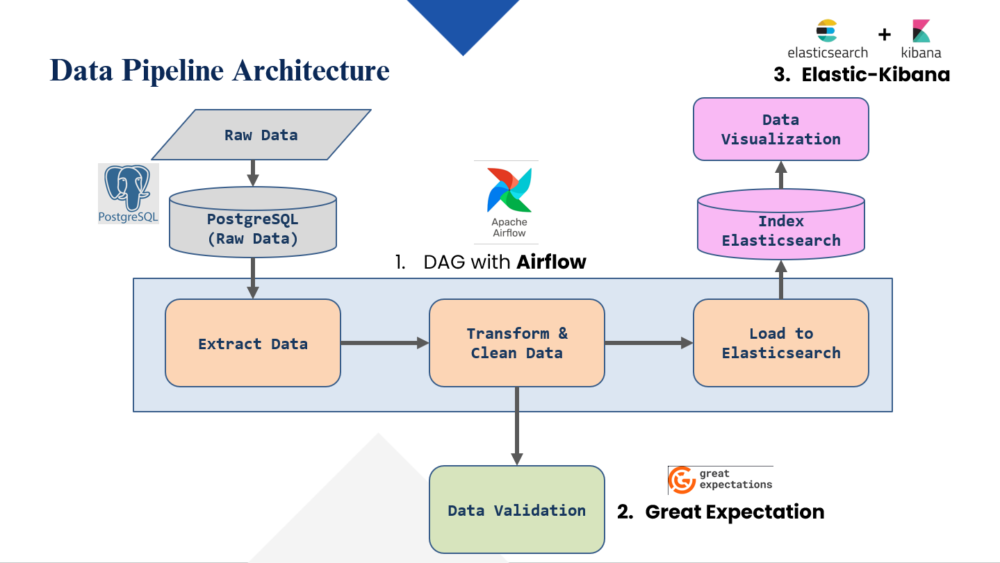
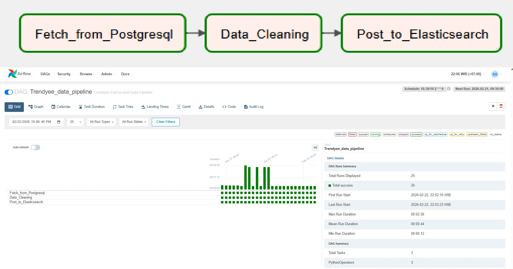
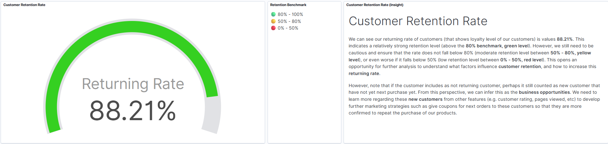
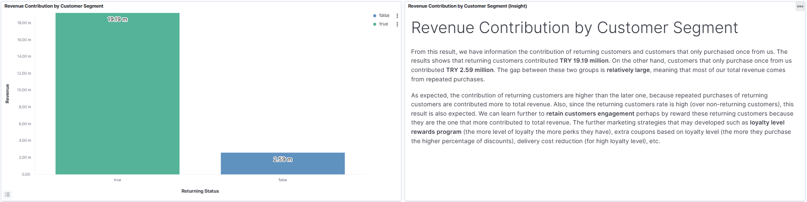

E-Commerce Monitoring Pipeline
End-to-End Data Engineering Pipeline for Sales & Retention Monitoring
End-to-End Data Engineering Pipeline for Sales & Retention Monitoring
E-commerce platforms generate large volumes of transactional data, but without a structured pipeline, data processing and monitoring become inefficient.
Manual analysis limits continuous tracking of sales performance and customer retention metrics.
Built an end-to-end automated pipeline using Airflow to process data, validate quality, and deliver business-ready datasets to Elasticsearch.
Integrated ETL workflows, Great Expectations for validation, and Kibana dashboards for monitoring.

End-to-end data pipeline architecture from ingestion to visualization.

Airflow DAG orchestrating scheduled ETL processes.


Kibana dashboards for monitoring revenue and customer retention.